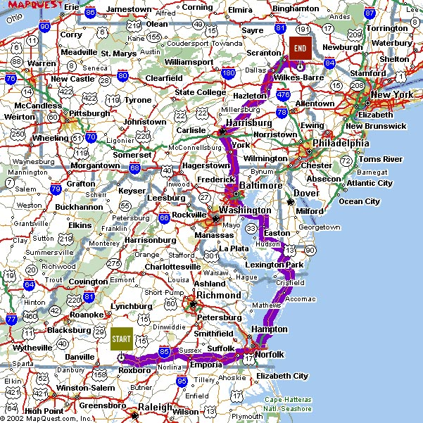

the geoweb
Locals and Tourists
Inside AirBnB
source
source
source
source
How did we get here?

~1997 - today
GPS
the web changed
more data became available
FOSS became mainstream
AJAX (2005)
source
source
data becomes more available
source
OpenStreetMap's iD editor
show me the way
source
OpenStreetMap before 2010 earthquake
source
OpenStreetMap after 2010 earthquake
source
source
source
source
source